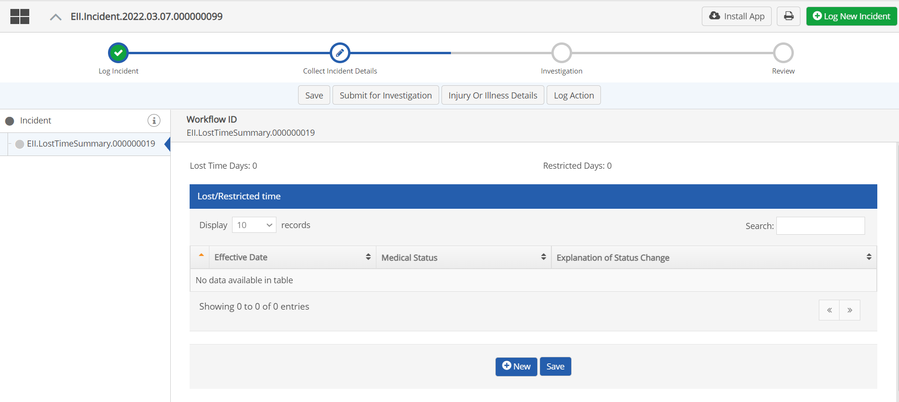
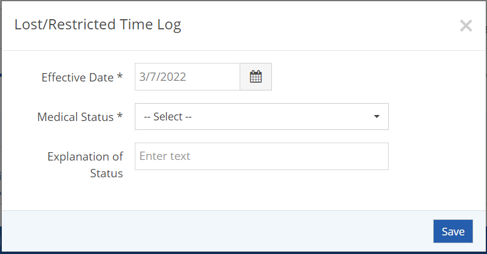
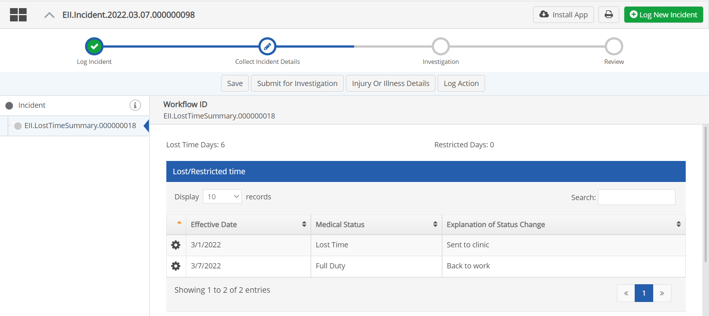

For OSHA Recordable Injury or Illness incidents you can log Lost Time or Restricted Days.
To log lost or restricted time:
On the initial incident form, check the OSHA Recordable box.
The Log Lost|Restricted Time form will be added to the form set.
In the Lost Time Summary form, click New.

Enter an Explanation of Status (change).

Click Save.
You will be returned to the form and the new record will be shown in the Lost/Restricted Time table. You can add another row for a status change, such as date of return to full duty.

The user must have the appropriate permission to delete an entry.